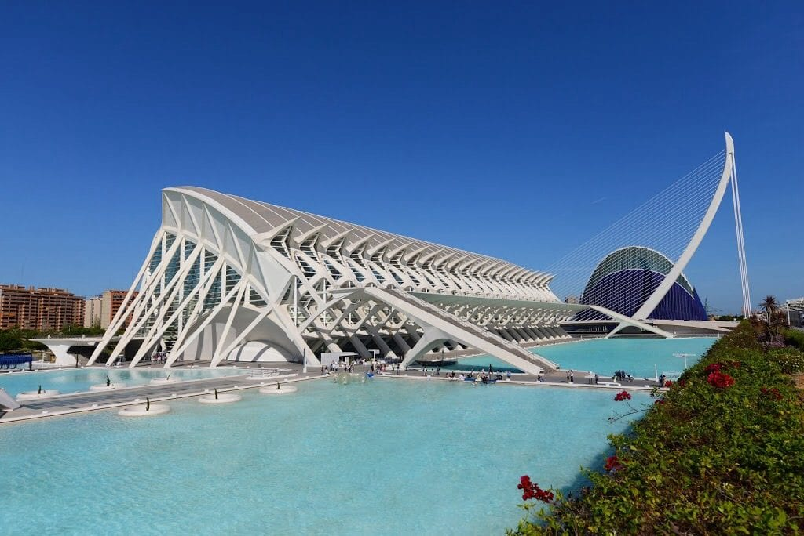
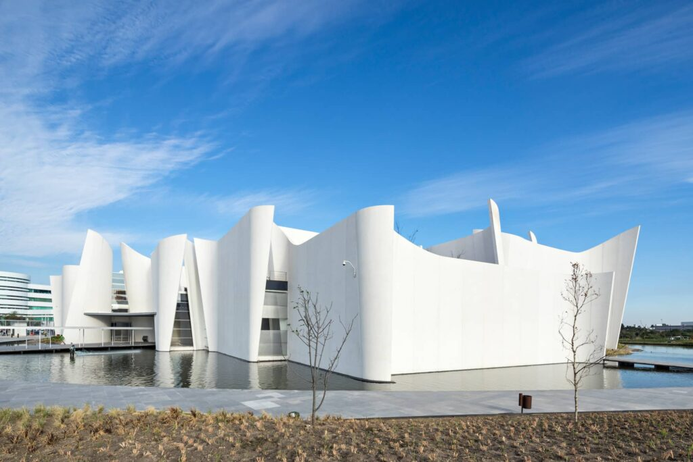
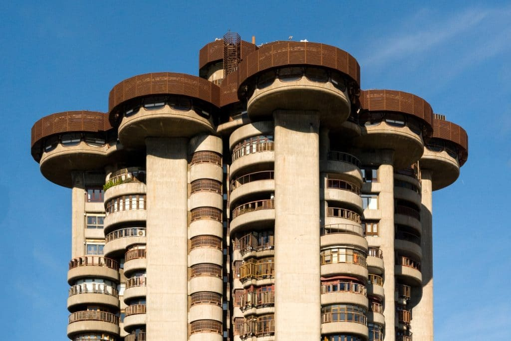
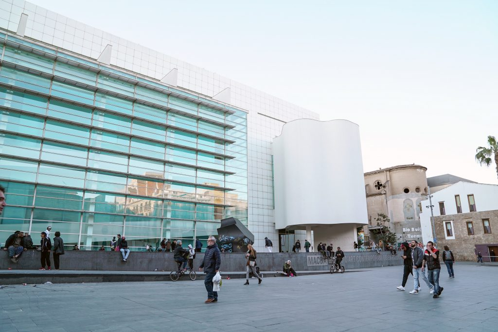

Ciutat de les arts i les ciències (1998)
La Ciutat de les Arts i les Ciències (CAC), Ciutat de les Ciències en el projecte inicial, és un complex
arquitectònic, cultural i d'entreteniment de la ciutat de València. Així mateix és el nom d'un barri de València
i forma part del districte de Quatre Carreres.

Museu Internacional del Barroc (2016)
El Museu Internacional del Barroc és un museu d'art barroc dissenyat per l'arquitecte japonès Toyo Itó i
localitzat en Pobla de Saragossa, Pobla, Mèxic. Va ser inaugurat el 4 de febrer del 2016 pel governador de
l'estat Rafael Moreno Valle Rosas.

Edifici Torres Blanques (1969)
L'edifici Torres Blancas de Madrid (Espanya) es troba en la confluència del número 2 del carrer Cor de María
amb el número 37 de l'avinguda d'Amèrica. És considera un exemple d'arquitectura organicista i brutalista.

Museu d'Art Contemporani de Barcelona (1995)
Conegut també per les seves sigles MACBA, és un museu dedicat a
l'exposició de l'art i les pràctiques culturals contemporànies. Està situat al barri del Raval de la ciutat de
Barcelona.